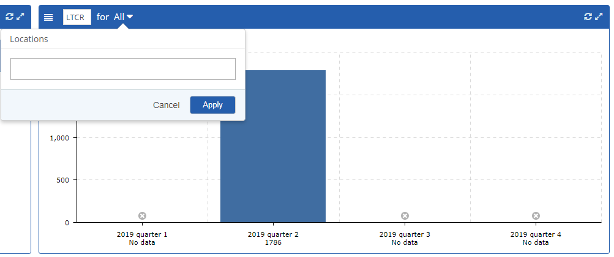

Key data from the IncidentApp is available in chart form.
View Charts
From the main menu, select Charts. Four charts are available. Each may be filtered by various criteria.
Most Injured Body Parts: Filter by location (facilities). Display as Body picture, pie chart or bar chart.
Quarterly Reports: Shows different types of incident rate data for the last 4 quarters, including the most recent. Filter by location (facilities). Choose report type:
OSHA Recordable Incident Rate (OSHA): A rate calculated based on the number of recordable incidents and the total number of employee hours worked at the company.
Lost Time Case Rate (LTCR): A rate calculated based on the number of recordable incidents that included lost time and the total number of employee hours worked at the company.
Days Away/Restricted or Job Transfer Rate (DART): A rate calculated based on the total number of recordable incidents that included lost time, restricted time or job transfer and the total number of employee hours worked at the company.
Severity Rate (SR): Average number of lost days per recordable incident
Count of Incidents: Filter by incident criteria, location.
Count of Actions: Filter by incident criteria, location.
Filter Chart Data
Select the filter button on the top bar.

Start typing in the text box, then select from the matches offered. Repeat to add more than one criteria.
Click Apply.
Click the Refresh button in the top right corner of the dashboard.
To apply a date filter, on the top navigation bar, enter From and To dates.
To expand a chart to the full window, click the double arrow button top right. Click again to reduce it to original size.